Partikeleffekte ohne Programmieren auf Android
Explosionen, Feuer, Rauch, Regen, Schnee, Hyperraum, Stromschlag, Hit-Stop, Blitz und Überblendung: alle Effekte aus dem Beispiel Effects showcase, ohne eine Zeile Code auf einem Android-Tablet.
Projekte und Export
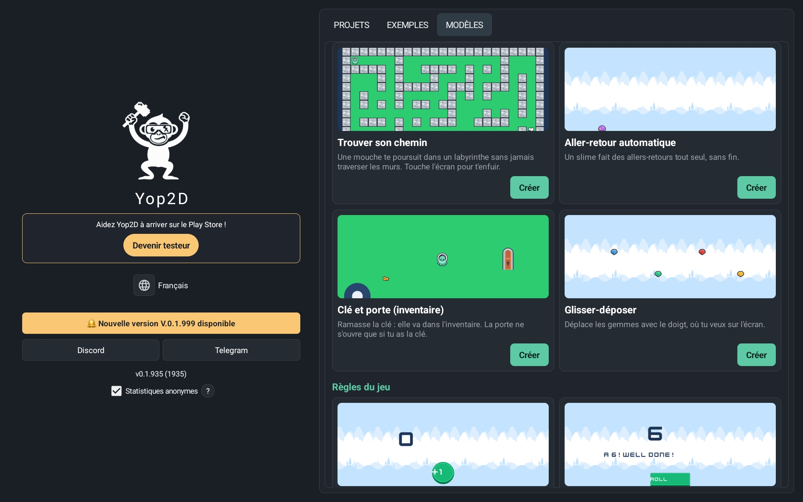
Auf dem Startbildschirm findest du deine Projekte mit Vorschaubildern und öffnest die Beispielspiele, um schnell zu lernen. Mit einem einzigen Knopf baut Yop2D dein Spiel zu einer eigenständigen APK-Datei, direkt auf deinem Gerät: ohne Computer, ohne Server, ohne fremde Werkzeuge.
35 Vorlagen zum Lernen
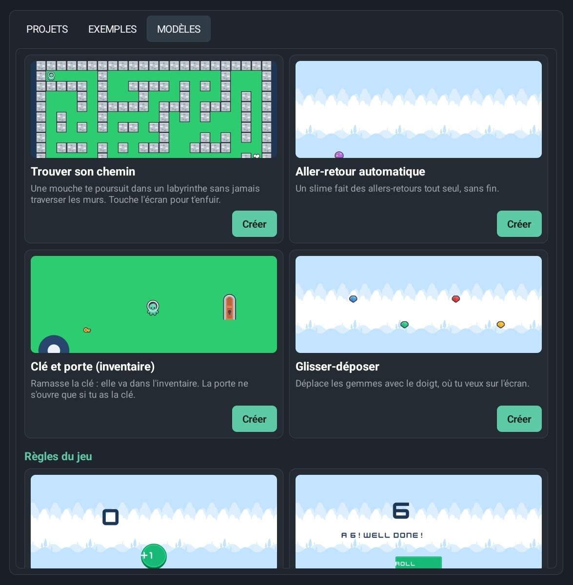
Schon beim ersten Start fragt Yop2D „Welches Spiel möchtest du erstellen?“: 35 kleine Projekte, die jeweils genau eine Sache zeigen (bewegen, springen, schießen, Wegfindung, eine Variable, ein HUD, eine Pause, Partikel…), nach Kategorien sortiert. Jede Vorlage läuft sofort und erklärt auf dem Bildschirm, welcher Node was tut. Ganz oben begleitet dich die Anleitung „Dein erstes Spiel in 5 Minuten“ Schritt für Schritt.
Visueller Level-Editor
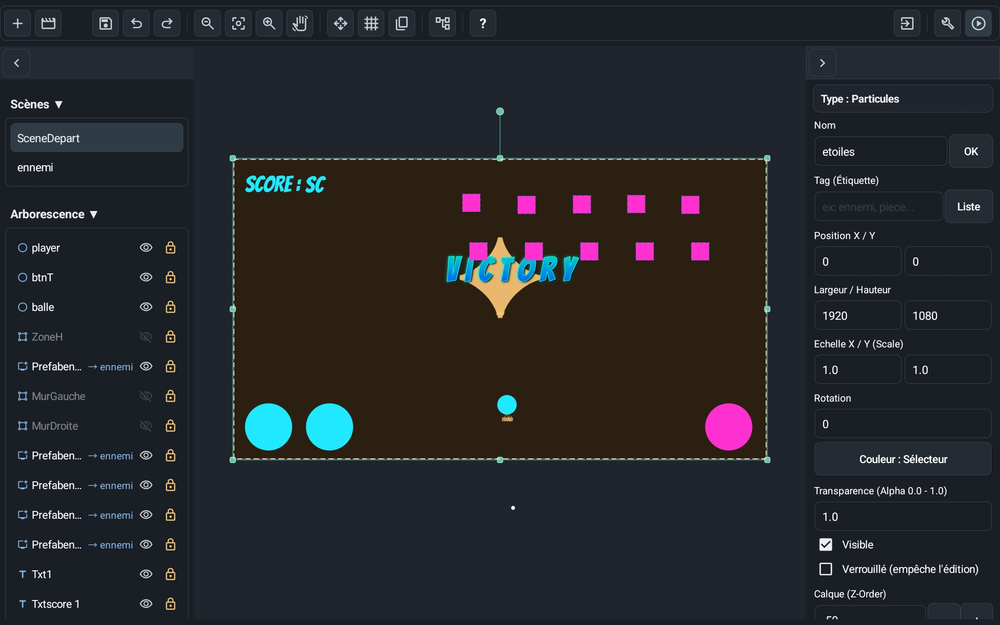
Eine Oberfläche nach dem Vorbild professioneller Engines, gemacht für Touchscreens. Tippe ein Objekt an, um es auszuwählen, wische, um die Szene zu verschieben, und nutze die Griffe, um es zu bewegen, zu skalieren oder zu drehen. Blende Objekte mit einem Tippen aus oder sperre sie, damit nichts aus Versehen verrutscht.
Levels aus Kacheln
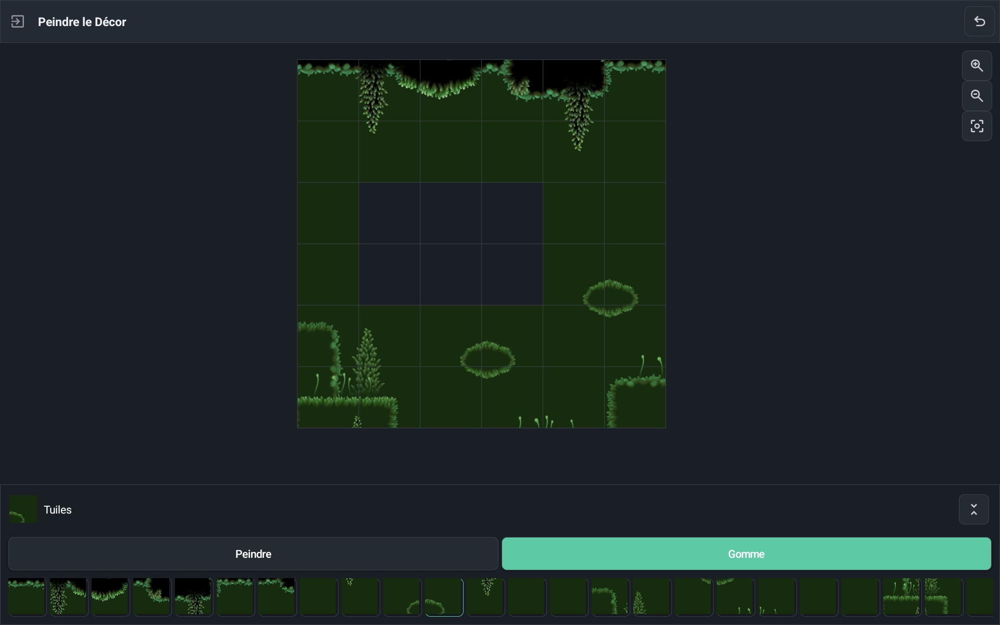
Importiere ein Tileset, male deine Levels Kachel für Kachel und lege einmal fest, welche Kacheln fest sind. Kollisionen werden automatisch berechnet, so entstehen Jump'n'Runs und Karten von oben im Handumdrehen.
Animations-Editor in Echtzeit
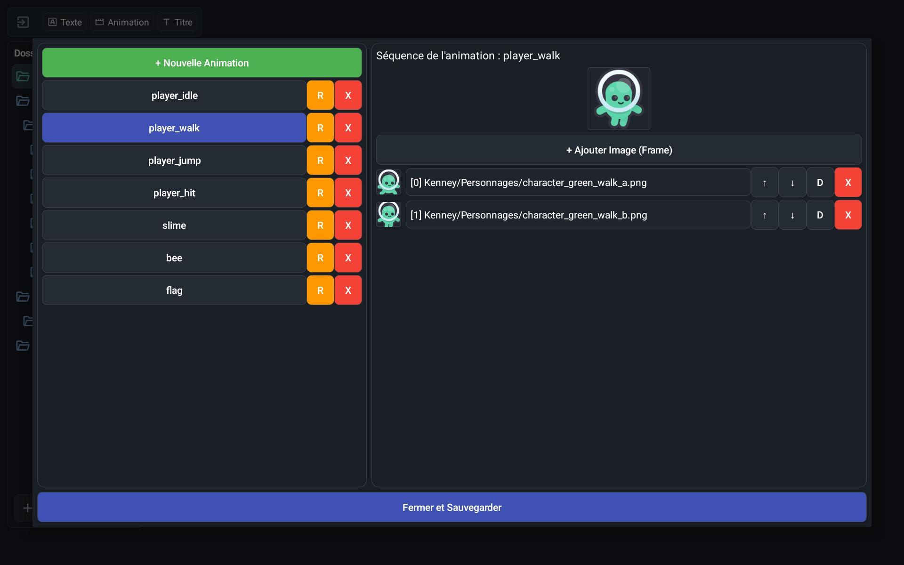
Sieh deine importierten Einzelbilder auf einen Blick und schau dir deine 2D-Animationen in Echtzeit an, direkt in der Engine. Im Spiel folgen die Animationen Pause und Zeitlupe wie alles andere.
Eingebaute Titel und Texteffekte
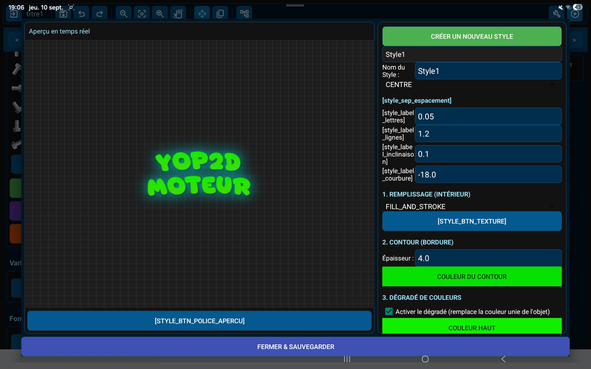
Erstelle gestaltete Titel (Farbverläufe, Umrisse, Neon, Schatten, Relief, Texturen, Kurven) direkt in der Engine, statt schwere Textbilder in anderen Apps zu erzeugen. Deine fertige APK bleibt klein.
Texte und Dialoge in mehreren Sprachen
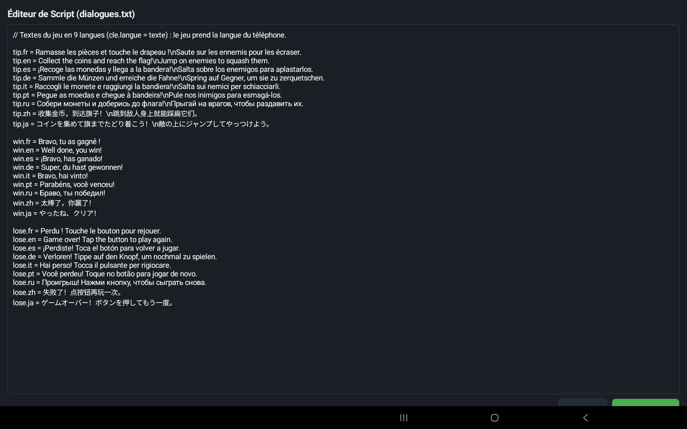
Alle Spieltexte stehen in einer einzigen Datei, die du direkt in Yop2D bearbeitest: eine Zeile pro Sprache (hallo.fr, hallo.en…). Der Node „Dialog anzeigen“ wählt selbst die Sprache des Handys des Spielers: Dein Spiel spricht 9 Sprachen, ohne zusätzlichen Node.
Visuelles Node-System
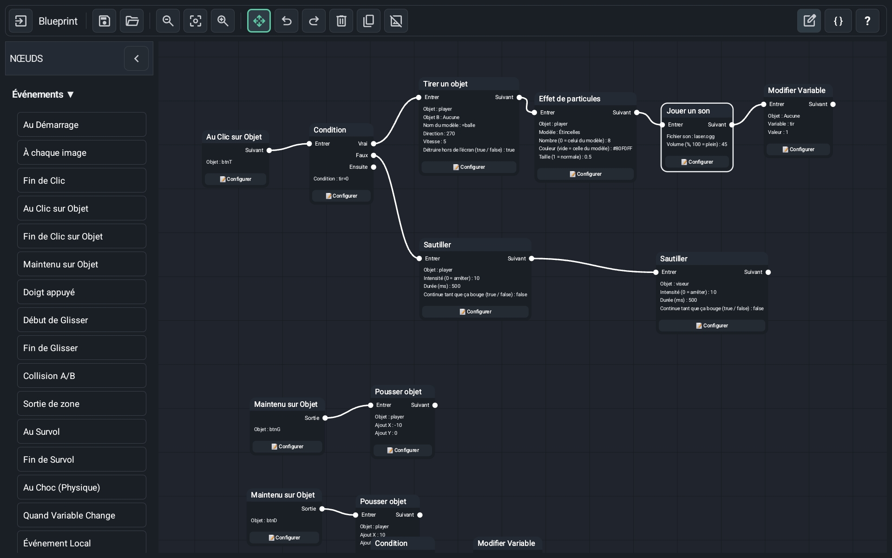
Kein Code nötig: Die Spiellogik entsteht aus visuellen Blöcken (Nodes), die miteinander verbunden werden. 132 fertige Nodes decken Bewegung, Physik, Animationen, Sound, Dialoge, Inventar, Kamera, Timer und Bedingungen ab. Klappe ganze Node-Ketten zusammen, damit deine Arbeitsfläche übersichtlich bleibt. Ein Knopf räumt alle Knoten mit einem Tippen auf, als gut lesbare Bäume von links nach rechts.
Das Gehirn deiner Spiele
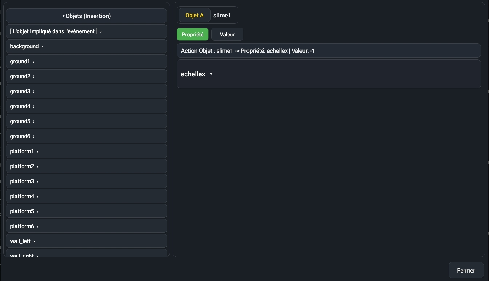
Tippe auf einen Knoten, um ihn einzustellen: Das Fenster zeigt zuerst, worauf er wirkt (① Worauf?), dann seine Einstellungen (②). Wähle Bilder, Töne oder Animationen aus Listen und antworte mit einem Tippen „ja“ oder „nein“. Kleine Formeln wie score + 1 nutzen Variablen, die Fingerposition, den Joystick, die Zeit oder Objekteigenschaften: Tippe einfach links auf eine Hilfe, und eine Zeile „Einfach gesagt“ erklärt die Formel in Worten.
Beispielspiele inklusive
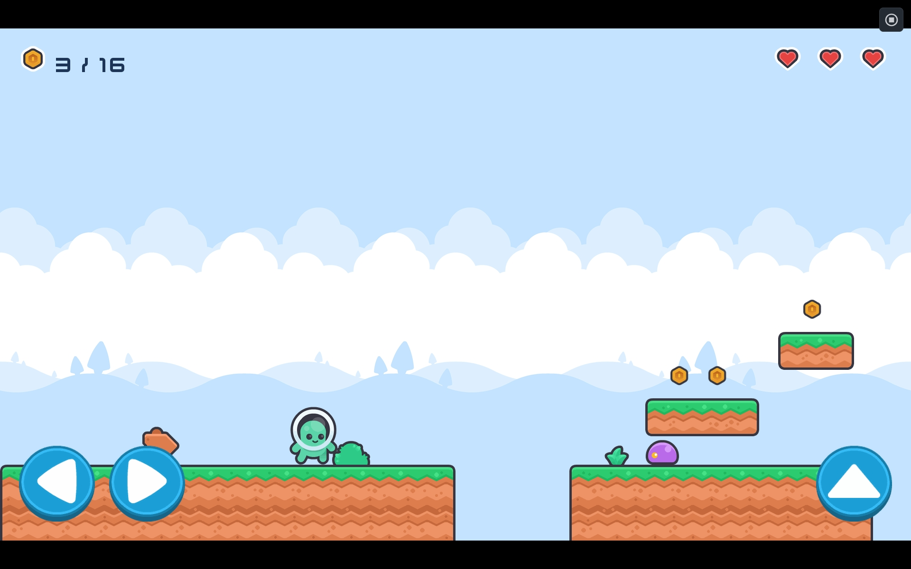
Zwölf Beispielspiele lassen sich im Reiter „Beispiele“ der Engine herunterladen: Neon shooter (Raumschiff-Arcade), Neon jump (Plattformer mit mitlaufender Kamera), Platformer (Münzen, Gegner und 3 Leben), Climb & run (eine Figur, die von selbst läuft, springt, sich duckt und Leitern hochklettert), Maze chase (ein Labyrinth, in dem dich zwei Fliegen jagen), Pirate battle (eine Seeschlacht gegen Piraten), Candy match (3 Bonbons in eine Reihe), Memory cards (finde die Kartenpaare), Dungeon walk und Dungeon escape (ein isometrischer Dungeon zum Erkunden und Entkommen), Lost on the moon (eine Geschichte mit Entscheidungen in 9 Sprachen) und eine Vitrine aller visuellen Effekte. Öffne sie, spiele sie und ändere sie dann, um zu verstehen, wie alles funktioniert. Alle Beispiele ansehen →
Auf Tablet und Handy
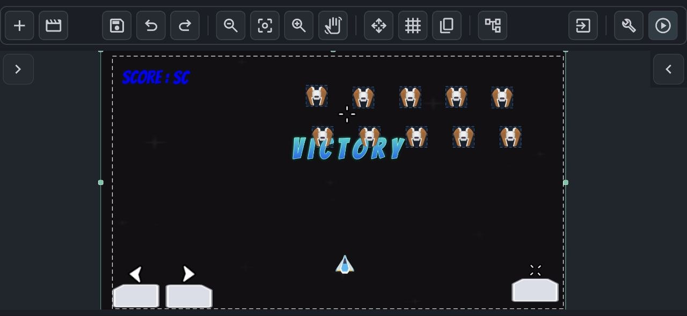
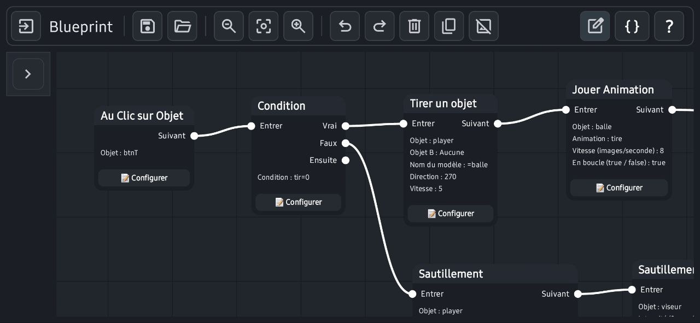
Am bequemsten ist ein Tablet, aber Yop2D läuft auch auf Android-Handys im Querformat. Auf kleinen Bildschirmen wechseln die Bereiche in eine kompakte Anordnung, damit möglichst viel Platz für die Szene bleibt. Die obere Leiste lässt sich mit dem Finger verschieben, und der Zwei-Finger-Zoom folgt deinen Fingern.
Was die Engine kann
Visuelle Nodes ohne Code
132 Nodes, um die Spiellogik durch Verbinden von Blöcken zu bauen, mit einfachen Formeln, wenn nötig.
35 Vorlagen für Einsteiger
Ein Reiter „Vorlagen“ mit kleinen Projekten nach Kategorien: Jede zeigt genau eine Sache und erklärt, welcher Node was tut.
Dein erstes Spiel in 5 Minuten
Eine eingebaute Anleitung führt dich Schritt für Schritt zu einem echten kleinen Spiel: Spiel ausprobieren, einen Knoten hinzufügen, verbinden, einstellen. Bei jedem Schritt zeigt die Engine, wo du tippen musst.
Mein animierter Held und 4 Missionen
Eine 2. eingebaute Anleitung erstellt einen Helden, der läuft und springt, mit Boden, Hintergrund und Musik. Danach gehen 4 Missionen Schritt für Schritt im selben Spiel weiter: Münzen und Punkte, ein Gegner auf Patrouille, ein „Sieg!“-Bildschirm mit Konfetti und Ton und zum Schluss die APK-Datei zum Installieren auf dem Handy. Eine Sprechblase zeigt, wo du tippen musst, und „✨ Mach es für mich“ hilft, wenn du nicht weiterkommst.
Einstellungen, einfach gesagt
Das Fenster eines Knotens zeigt zuerst, worauf er wirkt, dann seine Einstellungen. Hilfen zum Antippen (Finger und Bildschirm, Joystick, Zeit, Objekte, Variablen) und eine Zeile „Einfach gesagt“, die jede Formel in einen Satz übersetzt. Überall einfache Namen: „ja / nein“ statt true / false.
APK-Export offline
Dein Spiel wird zu einer echten Android-App, gebaut auf dem Tablet oder Handy selbst, auch ohne Internet.
Szenen als Objekte (Prefabs)
Jede Szene lässt sich als Objekt in eine andere Szene setzen: ideal für eine Reihe gleicher Gegner oder wiederverwendbare Teile.
Auswahl per Tag
Gib Objekten ein Tag, und ein einziger Node wirkt auf alle gleichzeitig: alle Gegner bewegen, alle Münzen zerstören.
Fertige Verhaltensweisen
Im Fenster „⚙ Verhalten des Objekts“ legst du fest, was ein Objekt ist: Kulisse, Boden, fallendes Objekt, Plattform-Figur (laufen, springen, Leitern), Figur in Draufsicht oder Objekt zum Ziehen mit dem Finger. Seine Animationen (Stehen, Laufen, Springen, Klettern) wechseln von selbst je nach Bewegung. Schwerkraft, Abpraller, Kollisionen sowie „verfolgen“ oder „fliehen“ für Gegner. Ein Gegner kann auch von selbst patrouillieren: Er läuft hin und her und dreht am Abgrund oder an einer Wand um.
Wegfindung
Eine Figur oder ein Gegner findet selbst den kürzesten Weg auf einem Raster und läuft um Mauern herum: Labyrinthe, Dungeons, Strategiespiele.
Tilemaps
Male Levels mit einem Tileset und markiere feste Kacheln einmal: Kollisionen sind automatisch.
Raster und Puzzles
Knoten, um ein Raster zu füllen, 3 gleiche Teile in eine Reihe zu bringen und das Spielfeld zu mischen: alles für ein „Match-3“-Spiel wie Candy match.
Isometrische Ansicht
Objekte stehen je nach Position davor oder dahinter, und der Joystick folgt den Diagonalen: ideal für Dungeons und Spiele in Dreiviertelansicht wie Dungeon walk.
Variablen, Inventar und Speichern
Punkte, Leben, Inventarlisten und jederzeit den Spielstand speichern oder wiederherstellen.
Touch-Steuerung
Virtuelle Joysticks, Knöpfe und HUD mit Multitouch: gleichzeitig laufen und springen.
Pause und Zeitlupe
Das ganze Spiel folgt Pause und Zeitlupe, während dein Pausenmenü weiter funktioniert.
Dialoge, Sound und Kamera
Textdialoge, Soundeffekte mit Lautstärkeregelung, Musik in Schleife, eine Kamera, die dem Spieler innerhalb der Levelgrenzen folgt, Kamerawackeln und Vibration.
Partikel und visuelle Effekte
13 Partikelvorlagen (Explosion, Feuer, Rauch, Regen, Schnee, Hyperraum, Druckwelle…), Spuren, Leuchten, Stromschlag, Treffer-Standbild, Blitz, Tönung, dunkle Ränder und Bildschirmblende.
Spiele in mehreren Sprachen
Schreibe jeden Dialog in mehreren Sprachen: Das Spiel zeigt automatisch die Sprache des Telefons oder die in einem Menü gewählte.
Ein einfacher, bequemer Editor
Eine Werkzeugleiste mit dem Nötigsten (ein einziger +-Knopf für Objekte und Szenen), ein schlichter Stil, bei dem nur das aktive Werkzeug blau leuchtet, ein vollständiger Farbwähler, ein großes Fenster zum Schreiben der Texte, Animationen Ordner für Ordner auswählbar und ein Modus „nur verschieben“, um Knoten aufzuräumen, ohne Verbindungen zu lösen.
Ein übersichtlicher Inspektor
Das gewählte Objekt erscheint mit Vorschaubild und Namen, einem Schloss zum Sperren, einklappbaren Bereichen, Schiebereglern für Deckkraft und Drehung und einer Kette, die beim Skalieren die Proportionen hält.
Anleitungen für Einsteiger
Schritt-für-Schritt-Antworten auf die häufigsten Einsteigerfragen, geschrieben mit den echten Nodes der Engine. Du findest sie auch in Yop2D, in der Hilfe des Node-Editors.
Eine Figur springen lassen
Schwerkraft, fester Boden und Sprungtaste, ohne Springen in der Luft.
Verhalten
Gehen, springen, klettern, Ansicht von oben und Animationen, ganz ohne Knoten.
Münzen sammeln und Punkte zählen
Ein Tag, eine Punktevariable und ein Text, der die Punkte zeigt.
Leben verlieren und Game Over
Eine Lebensvariable, eine Lebensleiste und zurück zum Start, wenn das Leben auf 0 fällt.
Zum nächsten Level
Eine Szene pro Level, eine Zielzone und ein Punktestand, der weiterläuft.
Partikel und Effekte
Eine Explosion, wenn man einen Gegner berührt, ein Schweif hinter dem Raumschiff, ein Bildschirmblitz und eine Überblendung.
Node-Referenz
Alle 132 Nodes von Yop2D auf einer Seite: was jeder Node macht, seine Einstellungen, seine Ausgänge und ein Beispiel. Die Namen sind genau die aus dem Node-Editor.
Yop2D im Vergleich zu anderen Engines
Es gibt hervorragende Spiel-Engines. Hier ein ehrlicher Vergleich, der dir bei der Wahl hilft, einschließlich dessen, was Yop2D nicht kann.
| Engine | Wo man erstellt | Wie man programmiert | 2D / 3D | Preis | Das Spiel läuft auf |
|---|---|---|---|---|---|
| Yop2D | Android-App (Tablet, Handy), offline | Visuelle Nodes, ohne Code | 2D | Kostenlos, ohne Werbung | Android (APK wird auf dem Gerät gebaut) |
| GDevelop | Computer, Webbrowser, mobile App | Ereignisse, ohne Code (JavaScript optional) | 2D und 3D | Kostenlos und Open Source; bezahlte Pakete für mehr Online-Dienste | Android, iOS, Web, Computer (mobile Versionen werden online gebaut) |
| Construct 3 | Webbrowser (auch auf Tablets) | Ereignisblätter, ohne Code (JavaScript optional) | Vor allem 2D | Kostenpflichtiges Abo; eingeschränkte Gratisversion | Android, iOS, Web, Computer (mobile Versionen werden online gebaut) |
| Godot | Computer, Webbrowser, Android-Editor | Code (GDScript, C#) | 2D und 3D | Kostenlos und Open Source | Android, iOS, Web, Computer |
Vereinfachte Übersicht, Stand September 2026. Engines ändern sich schnell: Details findest du auf der Website der jeweiligen Engine.
Yop2D passt zu dir, wenn…
- du nur ein Android-Tablet oder -Handy hast und keinen Computer;
- du überall erstellen möchtest, auch ohne Internet;
- du keine Programmiersprache lernen möchtest;
- du ein kostenloses Werkzeug ohne Werbung, ohne Abo und ohne Wasserzeichen in deinen Spielen möchtest;
- du deine Spiele als Android-Apps mit Freunden, Familie oder Schülern teilen möchtest.
Was Yop2D (noch) nicht kann
- Deine Spiele laufen nur auf Android: keine Version für iPhone, Web oder Computer.
- Noch kein AAB-Export, das Format, das Google Play zum Veröffentlichen verlangt. Er ist für eine spätere Version geplant.
- Nur 2D.
- Es ist eine junge Engine in der Testphase: Die Community und die Zahl der Tutorials sind noch klein, und Fehler sind möglich.
- Keine Skriptsprache für erfahrene Programmierer: Alles geschieht mit Nodes.
- Die Engine ist kostenlos, aber ihr Quellcode ist nicht öffentlich.
Wann eine andere Engine besser passt
- Du brauchst Versionen deines Spiels für iPhone, Web oder Computer: GDevelop, Construct oder Godot.
- Du möchtest richtig programmieren lernen oder 3D-Spiele machen: Godot.
- Du arbeitest am Computer und möchtest eine Engine ohne Code mit großer Community: GDevelop oder Construct.
Häufige Fragen
Was ist Yop2D?
Yop2D ist eine kostenlose 2D-Spiel-Engine ohne Code für Android. Damit kann jeder auf Tablet oder Handy mit visuellen Nodes ein komplettes Videospiel erstellen, ohne Programmierkenntnisse, und es direkt auf dem Gerät als APK exportieren.
Ist Yop2D wirklich kostenlos? Gibt es Werbung?
Ja, Yop2D ist zu 100 % kostenlos: kein Abo, keine In-App-Käufe, keine versteckten Kosten. In Yop2D gibt es keine Werbung, und es wird auch nie welche geben.
Wem gehören die Spiele, die ich erstelle? Darf ich sie verkaufen?
Deine Spiele gehören dir. Du kannst sie behalten, verschenken, teilen oder verkaufen, ohne um Erlaubnis zu fragen und ohne etwas an Yop2D zu zahlen.
Enthalten meine Spiele ein Yop2D-Logo oder Wasserzeichen?
Nein. Die exportierten Spiele enthalten weder ein Logo noch einen Startbildschirm oder ein Wasserzeichen von Yop2D.
Ist Yop2D Open Source?
Nein. Yop2D ist kostenlos, aber sein Quellcode ist nicht öffentlich. Für deine Spiele ändert das nichts: Sie gehören ganz dir.
Ich kann nicht programmieren. Ist das ein Problem?
Überhaupt nicht. Yop2D ersetzt Code durch visuelle Nodes, die man miteinander verbindet. Es ist für Einsteiger gemacht und für alle, die sich lieber auf ihr Spiel konzentrieren. Die Anleitungen für Einsteiger zeigen dir Schritt für Schritt, wie es geht.
Auf welchen Geräten läuft Yop2D?
Auf Android-Tablets und -Handys ab Android 7.0. Am bequemsten ist ein Tablet; auf dem Handy läuft Yop2D im Querformat mit einer kompakten Oberfläche. Es gibt keine Version für iPhone, iPad oder Computer.
Brauche ich einen Computer oder eine Internetverbindung?
Nein. Yop2D erstellt und exportiert dein Spiel als eigenständige APK direkt auf deinem Gerät, zu 100 % offline. Kein Bauen in der Cloud, kein Konto.
Kann ich mein Spiel bei Google Play veröffentlichen?
Noch nicht direkt. Yop2D exportiert APK-Dateien: Du kannst sie installieren, teilen oder auf Seiten veröffentlichen, die APKs annehmen, zum Beispiel itch.io. Google Play verlangt das AAB-Format, signiert mit deinem eigenen Schlüssel: Dieser Export ist für eine spätere Version geplant.
Kann ich mein Yop2D-Spiel auf dem iPhone, im Web oder am Computer spielen?
Nein. Mit Yop2D erstellte Spiele sind Android-Apps. Wenn du andere Plattformen brauchst, findest du im Vergleich Engines, die sie unterstützen.
Welche Arten von Spielen kann ich machen?
2D-Spiele: Jump'n'Runs, Abenteuer von oben, Shooter, Arcade- und Knobelspiele, Quiz, interaktive Geschichten … Kachel-Editor, Physik, Kollisionen, Animationen, Dialoge, Inventar und Speichern decken die meisten Bedürfnisse ab. 3D-Spiele sind mit Yop2D nicht möglich.
Kann ich eigene Bilder, Sounds und Musik verwenden?
Ja. Du importierst eigene Bilder, Tilesets, Animationsbilder, Soundeffekte und Musik. Titel und Texteffekte erstellst du direkt in der Engine.
In welchen Sprachen gibt es Yop2D?
Oberfläche, eingebaute Hilfe, Anleitungen und Node-Referenz gibt es in 9 Sprachen: Deutsch, Englisch, Französisch, Spanisch, Italienisch, Portugiesisch, Russisch, vereinfachtes Chinesisch und Japanisch.
Wie lerne ich, Yop2D zu benutzen?
Beginne mit der Anleitung „Dein erstes Spiel in 5 Minuten“: Sie lässt dich Schritt für Schritt ein echtes kleines Spiel bauen und zeigt dir, wo du tippen musst. Öffne den Reiter „Vorlagen“: 35 kleine Projekte, die jeweils genau eine Sache zeigen, mit einer Erklärung auf dem Bildschirm. Spiele dann die zwölf Beispielspiele und folge den Anleitungen für Einsteiger. Die Node-Referenz erklärt alle 132 Nodes, und der YouTube-Kanal, Discord und Telegram helfen dir weiter. Im Programm gehen die Anleitung „Mein animierter Held“ und ihre 4 Missionen (☰ → Missionen Schritt für Schritt) noch weiter, bis zum Spiel, das auf dem Handy installiert ist.
Wie setze ich eine Mission mittendrin fort?
Öffne dein Projekt, tippe auf ☰ und dann auf „Missionen Schritt für Schritt“ und wähle die Mission. Die Sprechblase beginnt wieder beim ersten Schritt: Tippe auf „Überspringen“, um bereits erledigte Schritte auszulassen, oder auf „◀“, um zu einem früheren Schritt zurückzugehen. Eine abgeschlossene Mission hat ein ✓ und kann wiederholt werden.
Warum zeigt Android bei der Installation der APK eine Warnung?
Weil die APK außerhalb des Play Store heruntergeladen wird. Tippe auf Weitere Details und dann auf Trotzdem installieren. Du kannst auch am geschlossenen Test auf Google Play teilnehmen: so wirst du Tester.
Sammelt Yop2D Daten?
Yop2D sendet anonyme Nutzungsstatistiken: Öffnen und Schließen, Nutzungsdauer und Absturzberichte (nur die Art des Fehlers), mit App-Version, Android-Version und Gerätesprache. Das Land wird aus der Verbindung geschätzt, ohne die IP-Adresse zu speichern. Keine persönlichen Daten und nichts aus deinen Projekten. Du kannst das auf dem Startbildschirm ausschalten, und exportierte Spiele senden nichts. Details: Datenschutz (auf Englisch).
Ist Yop2D fertig?
Yop2D wird aktiv weiterentwickelt und ist im geschlossenen Test auf Google Play. Man kann damit schon komplette Spiele machen, aber Fehler sind möglich: Exportiere deine Projekte regelmäßig als Sicherung und melde Probleme auf Discord oder Telegram.
Wer macht Yop2D?
Yop2D wird von einem unabhängigen Entwickler erstellt, mit den Rückmeldungen seiner Tester-Community.
Was unterscheidet Yop2D von GDevelop, Construct oder Godot?
Yop2D ist dafür gemacht, komplett auf einem Android-Tablet oder -Handy zu funktionieren, ohne Code, ohne Internet und ohne Computer, und es bleibt kostenlos und werbefrei. Dafür erstellt es nur 2D-Spiele für Android. Siehe den ausführlichen Vergleich.
Mach mit in der Community
Yop2D ist ein unabhängiges Projekt in aktiver Entwicklung. Melde Fehler, teile deine Spiele, schlage Funktionen vor oder hilf, die Übersetzungen zu verbessern.